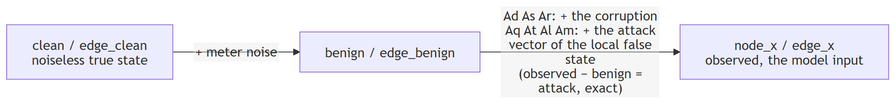

Data dictionary¶
What every array from fg.load() holds, as a record (order="random") or as a frame of the
timeline (order="time").
N = number of buses (nodes), E = number of branches (edges). A shape is "values per item":
[N,4] = 4 numbers per bus, [E,8] = an 8-dim vector per branch, [2,E] = 2 rows × E branches.
Cheat sheet¶
| field | shape | columns | meaning |
|---|---|---|---|
node_x |
[N,4] |
|V|, P_inj, Q_inj, theta |
bus meter readings |
node_m |
[N,4] |
same columns | 1 metered, 0 not (value zero-filled) |
edge_x |
[E,2] |
P_from, Q_from |
power leaving the branch (sign = direction) |
edge_m |
[E,2] |
same columns | 1 metered, 0 not |
edge_index |
[2,E] |
row 0 from_bus, row 1 to_bus |
connectivity |
edge_attr |
[E,8] |
r, x, b, g, gs, bs, tap, shift |
static branch electrical properties |
y |
[N] |
1 attacked, 0 clean. Which buses | |
family |
scalar | 0 benign, 1 Aq, 2 Ad, 3 As, 4 Ar, 5 At, 6 Al, 7 Am. Which attack | |
temporal_delta |
[N,2] |
ΔP, ΔQ |
injection change against the previous frame |
swing |
[N,2] |
ΔP, ΔQ |
temporal_delta as a z-score of recent volatility |
benign |
[N,4] |
same as node_x |
the same scan with the attack removed, noise kept (timelines) |
edge_benign |
[E,2] |
same as edge_x |
the same flows with the attack removed, noise kept (timelines) |
clean |
[N,4] |
same as node_x |
noiseless truth, all buses. The SE target (v0.7.2+) |
edge_clean |
[E,2] |
same as edge_x |
noiseless true flows, unmetered branches zeroed |
edge_clean_full |
[E,2] |
same as edge_x |
noiseless true flows on every branch, metered or not (computed from clean through yf on load; equals edge_clean where a flow meter exists) |
Labels: y says which buses, family says which attack¶
Two fields, two questions. y [N] is binary per bus because a bus is either tampered with or not.
family is one code per record because the generator runs one attack episode at a time, on one
or more buses at once; episodes never overlap, so each frame has one active family. That is a
property of how these files were built, not of the schema: concurrent attacks of different families would need a separate per-bus family map, say
bus_family [N] with 0 on clean buses (so y = bus_family > 0), added next to the scalar family
in a new data release.
| shape | values | in a batch | |
|---|---|---|---|
y |
[N] |
0 clean, 1 attacked | batch["y"] [B,N] (PyG: batch.y [B*N]) |
family |
scalar | 0 benign, 1 Aq, 2 Ad, 3 As, 4 Ar, 5 At, 6 Al, 7 Am (timelines only) | batch["family"] [B] (PyG: batch.family [B]) |
- Names:
fg.FAMILIES[code]. Stealthy subset:fg.STEALTHY_FAMILIES={1, 5, 6, 7}. - Per-bus family label, if a model needs one:
y * family[:, None]gives[B,N]with 0 on clean buses. - Every attacked record flags at least one bus. Benign records flag none.
- Per-family evaluation: filter by
familyand scoreyinside each group.fg.load(..., families=[...])does the filtering at load time.
node_x [N,4]: bus measurements (voltage first)¶
The column order is defined once, in fdia_graph.models.NodeColumns (v, p_inj, q_inj, theta);
every record, batch, split and stream exposes named views of it through .node() and .edge(),
and the generator, loader and estimator index columns through NODE and EDGE rather than literals:
rec = ds[0]
rec.node().theta # the angle column, a view of rec.node_x[..., 3]
NodeColumns.of(s.clean).v # works on any [..., 4] array, a stream's clean layer included
| col | name | physical units | pu units |
|---|---|---|---|
| 0 | |V| |
per-unit | per-unit |
| 1 | P_inj |
MW | pu |
| 2 | Q_inj |
MVAr | pu |
| 3 | theta |
degrees | radians |
Sign of P_inj/Q_inj: + = net consumption (load), − = net injection (gen). This is pandapower's
res_bus convention. Example (case14): the slack bus reads ≈ −235 MW, a 94 MW load bus reads ≈ +93 MW.
edge_attr [E,8]: static branch properties (per-unit, never change)¶
| col | name | meaning |
|---|---|---|
| 0 | r |
series impedance, real part (resistance). Z = r + jx |
| 1 | x |
series impedance, imag part (reactance) |
| 2 | b |
total line-charging susceptance. The pi model puts b/2 at each end; it is stored whole, not halved |
| 3 | g |
total charging conductance (transformer iron losses, 0 on lines), also stored whole |
| 4 | gs |
series admittance, real part (conductance). Y = 1/(r+jx) = gs + j·bs |
| 5 | bs |
series admittance, imag part (susceptance) |
| 6 | tap |
transformer tap ratio (1.0 = plain line) |
| 7 | shift |
transformer phase shift, degrees (0 = plain line) |
r,xandgs,bsare the same branch inverted (Y = 1/Z). Both ship so you never compute one from the other.- Bus shunts are not branch properties and are not in this table:
ds.bus_shunt_g/ds.bus_shunt_bin MW / MVAr at 1 pu (divide byds.baseMVAfor per-unit admittance).ds.ybusalready includes them on the diagonal, together with the halved charging and the tap / shift handling. - In PyG format (
fg.load(..., format="pyg")andfg.pyg_stream),Data.edge_attris the[E,2]flows (also exposed asData.edge_x) and this[E,8]table isData.edge_phys. On the dataset object it isds.edge_attr.
Where the branch flows live, per format¶
| you have | flows [E,2] |
flow mask [E,2] |
static line physics [E,8] |
|---|---|---|---|
dict record ds[i] or a ds.loader() batch |
["edge_x"] |
["edge_m"] |
["edge_attr"] |
PyG Data or DataBatch (format="pyg", fg.pyg_stream) |
.edge_attr or .edge_x |
.edge_mask |
.edge_phys |
ds.export() |
["edge_x"] [n,E,2] |
["edge_m"] |
ds.edge_attr |
stream dict fg.load_stream() |
["edge_x"] [T,E,2] |
["edge_m"] |
["edge_attr"] |
One name to watch: the static table's graph/edge_x is the per-unit series reactance of each branch
(ds.branch_x), unrelated to the per-record flow layer edge_x above; the on-disk name changes at
the next data release, the reader already spells the two apart.
The [E,8] physics keep the name edge_attr on dicts and the dataset, and become edge_phys on PyG
objects because PyG's edge_attr slot is its conventional home for per-edge model input, which
here are the flows.
Flows are per record, so they only exist on records and batches. The static per-unit branch
physics live on the dataset as ds.edge_attr [E,8] and one column each as ds.branch_r,
ds.branch_x, ds.branch_b, ds.branch_g, ds.branch_gs, ds.branch_bs, ds.branch_tap,
ds.branch_shift. The older ds.edge_r … ds.edge_shift spellings of all eight still work but raise
a DeprecationWarning; the rename exists because ds.edge_x (the reactance) collided with the flows' name.
The rest¶
| field | shape | meaning |
|---|---|---|
edge_x |
[E,2] |
[P_from, Q_from], power leaving the from-end (sign = direction). MW/MVAr or pu. |
node_m, edge_m |
[N,4], [E,2] |
1 metered, 0 not. Metering is sparse: read the mask. |
edge_index |
[2,E] |
row 0 from-bus, row 1 to-bus |
y, family |
[N], scalar |
see Labels above (Aq = paper A_o) |
slack |
dataset attribute | index of the reference (slack) bus, ds.slack. Derived from the clean layer, so v0.7.2+ only. Also Data.slack in PyG format |
ybus |
dataset attribute | full nodal admittance matrix [N,N], complex per-unit, in node_x bus order: ds.ybus (torch complex128) or ds.ybus_np. Built from edge_attr and the bus shunts with pandapower's branch model, equal to the engine's matrix. Static per shard, so it lives on the dataset, not on each record |
yf, yt |
dataset attributes | from-end and to-end branch admittance matrices [E,N] (rows follow edge_index, columns node_x bus order): ds.yf / ds.yt (torch complex128) or ds.yf_np / ds.yt_np. For a complex bus voltage vector V, V[from] * conj(Yf @ V) is the from-end branch flow in per-unit (times baseMVA gives edge_x / edge_clean units). Same construction as makeYbus |
stealthy |
scalar | 1 for the re-solve families Aq/At/Al (BDD-evading by construction), 0 for benign and Ad/As/Ar |
split |
scalar | 0/1/2 = train/val/test |
timestep |
scalar | position in the source load profile |
clean, edge_clean and edge_clean_full (v0.7.2+, edge_clean_full v0.15.0+)¶
- The noiseless, attack-free truth at the record's timestep, in
node_xcolumn order. cleancovers every bus with no mask, whatever the meter placement.edge_cleanzeroes unmetered branches, likeedge_x.edge_clean_fullis the same true flow on every branch, metered or not, computed fromcleanthroughyfwhen the shard is loaded (V[from] * conj(Yf @ V), timesbaseMVA). It equalsedge_cleanwherever a flow meter exists, so a graph model can supervise every edge.- On benign records
node_x − cleanis the meter error. - This is the state-estimation target.
The three layers of a frame¶
Every frame of a timeline carries three aligned layers, for node and for edge measurements:

| layer | meaning |
|---|---|
node_x / edge_x |
observed (attacked + noise). The model input. |
benign / edge_benign |
attack removed, noise kept |
clean / edge_clean |
noiseless true state. The SE target. |
benign − clean= noise.observed − benign= the attack, exactly, for every family: the observed scan is the benign draw plus the attack. For Aq/At/Al/Am that is the attack vector of the local false state on the meters it moves (the tamper masks); the rest readbenignexactly.cleanis the SE target.
The timeline file¶
| group | datasets | note |
|---|---|---|
| attrs | system, N, E, baseMVA, seed, T, families, kind="timeline", the knobs, attacked_frac |
ds.summary() and the registry read these |
data/ |
node_x, node_m, edge_x, edge_m, y, family, stealthy, seq_id, timestep, split, temporal_delta, swing |
one row per frame, time order |
benign/ |
node_benign, edge_benign |
the attack removed |
clean/ |
node_clean, edge_clean |
the noiseless truth per frame |
graph/ |
edge_index and the static branch physics and bus shunts |
the same for every frame |
episodes/ |
onset, length, family, bus_ptr, bus_idx |
ds.episodes |
attack/ |
mag_ptr, mag_bus, mag, node_tamper, edge_tamper |
designed magnitude per attacked bus, unsigned (a load rise and a drop of the same size record the same value); the meters the attacker wrote |
Chunked along the frame axis so a window of W frames is one read. The v0.7.2 record shards (the
same data/, clean/ once per pool timestep, a gap column, no benign/) still load through
fg.load(..., release="v0.7.2").
Models¶
Every dict the package returns is a typed bundle (fdia_graph.models.Bundle): a frozen
dataclass that is also the dict it always was, so out["node_x"], **out and iteration
keep working and out.node_x is new. Fields set to None are absent from the dict. Generated
by tools/models_doc.py from the dataclasses.
RecordBundle (fdia_graph.models.data)¶
One record as FdiaGraph[i] returns it (format="torch"): tensors in self.units with no leading axis, the static graph shared by every record, the label and provenance, and the optional layers the file carries (the benign layer on a timeline file). A dict as well, so DataLoaders, **item and item["node_x"] keep working.
Field groups: StreamLayers, GraphFields, CleanFields, TemporalFields, RecordIds, LabelFields, ScanFields.
| field | dict key | type | required | meaning |
|---|---|---|---|---|
edge_index |
edge_index |
Array | yes | [2, E] from and to bus of every branch (GraphFields) |
node_x |
node_x |
Array | yes | [..., N, 4] |V|, P_inj, Q_inj, theta (zero where unmetered) (ScanFields) |
node_m |
node_m |
Array | yes | [..., N, 4] meter mask, 1 metered (ScanFields) |
edge_x |
edge_x |
Array | yes | [..., E, 2] P_from, Q_from (ScanFields) |
edge_m |
edge_m |
Array | yes | [..., E, 2] flow-meter mask (ScanFields) |
y |
y |
Array | yes | [..., N] per-bus attack label, 1 attacked (LabelFields) |
family |
family |
Scalars | yes | [...] 0 benign, 1 Aq, 2 Ad, 3 As, 4 Ar, 5 At, 6 Al, 7 Am (timeline) (LabelFields) |
stealthy |
stealthy |
Scalars | yes | [...] 1 for the re-solve families Aq, At, Al, Am (RecordIds) |
seq_id |
seq_id |
Scalars | yes | [...] ramp sequence id, -1 otherwise (RecordIds) |
timestep |
timestep |
Scalars | yes | [...] position in the source load profile (RecordIds) |
edge_attr |
edge_attr |
Array | [E, 8] per-unit line physics r, x, b, g, gs, bs, tap, shift (v0.5.0+) (GraphFields) | |
temporal_delta |
temporal_delta |
Array | [..., N, 2] injection change vs the previous pool scan (v0.3+) (TemporalFields) | |
swing |
swing |
Array | [..., N, 2] that change as a z-score of recent change (v0.4.1+) (TemporalFields) | |
clean |
clean |
Array | [..., N, 4] true state at the record's timestep (CleanFields) | |
edge_clean |
edge_clean |
Array | [..., E, 2] exact true flows on metered branches (CleanFields) | |
edge_clean_full |
edge_clean_full |
Array | [..., E, 2] exact true flows on every branch (v0.15.0+) (CleanFields) | |
benign |
benign |
Array | [..., N, 4] attack removed, noise kept (StreamLayers) | |
edge_benign |
edge_benign |
Array | [..., E, 2] attack removed, noise kept (StreamLayers) |
BatchBundle (fdia_graph.models.data)¶
A batch of records as FdiaGraph.collate builds it: per-record tensors stacked along a leading batch axis B, the static graph once (the first record's), scalar metadata as long tensors [B].
Field groups: StreamLayers, GraphFields, CleanFields, TemporalFields, RecordIds, LabelFields, ScanFields.
| field | dict key | type | required | meaning |
|---|---|---|---|---|
node_x |
node_x |
Array | yes | [..., N, 4] |V|, P_inj, Q_inj, theta (zero where unmetered) (ScanFields) |
node_m |
node_m |
Array | yes | [..., N, 4] meter mask, 1 metered (ScanFields) |
edge_x |
edge_x |
Array | yes | [..., E, 2] P_from, Q_from (ScanFields) |
edge_m |
edge_m |
Array | yes | [..., E, 2] flow-meter mask (ScanFields) |
y |
y |
Array | yes | [..., N] per-bus attack label, 1 attacked (LabelFields) |
temporal_delta |
temporal_delta |
Array | [..., N, 2] injection change vs the previous pool scan (v0.3+) (TemporalFields) | |
swing |
swing |
Array | [..., N, 2] that change as a z-score of recent change (v0.4.1+) (TemporalFields) | |
clean |
clean |
Array | [..., N, 4] true state at the record's timestep (CleanFields) | |
edge_clean |
edge_clean |
Array | [..., E, 2] exact true flows on metered branches (CleanFields) | |
edge_clean_full |
edge_clean_full |
Array | [..., E, 2] exact true flows on every branch (v0.15.0+) (CleanFields) | |
benign |
benign |
Array | [..., N, 4] attack removed, noise kept (StreamLayers) | |
edge_benign |
edge_benign |
Array | [..., E, 2] attack removed, noise kept (StreamLayers) | |
edge_index |
edge_index |
Array | [2, E] from and to bus of every branch (GraphFields) | |
edge_attr |
edge_attr |
Array | [E, 8] per-unit line physics r, x, b, g, gs, bs, tap, shift (v0.5.0+) (GraphFields) | |
family |
family |
Scalars | [...] 0 benign, 1 Aq, 2 Ad, 3 As, 4 Ar, 5 At, 6 Al, 7 Am (timeline) (LabelFields) | |
stealthy |
stealthy |
Scalars | [...] 1 for the re-solve families Aq, At, Al, Am (RecordIds) | |
seq_id |
seq_id |
Scalars | [...] ramp sequence id, -1 otherwise (RecordIds) | |
timestep |
timestep |
Scalars | [...] position in the source load profile (RecordIds) |
ArraysBundle (fdia_graph.models.data)¶
A whole split of n records as export returns it (arrays, or tensors with format="torch" or "tf"), leading axis n: every per-record field that was requested and the file carries, plus the static graph. Fields not requested are absent from the dict view.
Field groups: PreviousFrameFields, StreamLayers, GraphFields, CleanFields, TemporalFields, RecordIds, LabelFields, ScanFields.
| field | dict key | type | required | meaning |
|---|---|---|---|---|
edge_index |
edge_index |
Array | [2, E] from and to bus of every branch (GraphFields) | |
edge_reactance |
edge_reactance |
array | [E], deprecated units, kept for old callers | |
node_x |
node_x |
Array | [..., N, 4] |V|, P_inj, Q_inj, theta (zero where unmetered) (ScanFields) | |
node_m |
node_m |
Array | [..., N, 4] meter mask, 1 metered (ScanFields) | |
edge_x |
edge_x |
Array | [..., E, 2] P_from, Q_from (ScanFields) | |
edge_m |
edge_m |
Array | [..., E, 2] flow-meter mask (ScanFields) | |
y |
y |
Array | [..., N] per-bus attack label, 1 attacked (LabelFields) | |
temporal_delta |
temporal_delta |
Array | [..., N, 2] injection change vs the previous pool scan (v0.3+) (TemporalFields) | |
swing |
swing |
Array | [..., N, 2] that change as a z-score of recent change (v0.4.1+) (TemporalFields) | |
clean |
clean |
Array | [..., N, 4] true state at the record's timestep (CleanFields) | |
edge_clean |
edge_clean |
Array | [..., E, 2] exact true flows on metered branches (CleanFields) | |
edge_clean_full |
edge_clean_full |
Array | [..., E, 2] exact true flows on every branch (v0.15.0+) (CleanFields) | |
benign |
benign |
Array | [..., N, 4] attack removed, noise kept (StreamLayers) | |
edge_benign |
edge_benign |
Array | [..., E, 2] attack removed, noise kept (StreamLayers) | |
family |
family |
Scalars | [...] 0 benign, 1 Aq, 2 Ad, 3 As, 4 Ar, 5 At, 6 Al, 7 Am (timeline) (LabelFields) | |
stealthy |
stealthy |
Scalars | [...] 1 for the re-solve families Aq, At, Al, Am (RecordIds) | |
seq_id |
seq_id |
Scalars | [...] ramp sequence id, -1 otherwise (RecordIds) | |
timestep |
timestep |
Scalars | [...] position in the source load profile (RecordIds) | |
prev_node_x |
prev_node_x |
Array | [..., N, 4] the previous frame's node readings (PreviousFrameFields) | |
prev_edge_x |
prev_edge_x |
Array | [..., E, 2] the previous frame's branch-flow readings (PreviousFrameFields) | |
prev_timestep |
prev_timestep |
Array | [...] the previous frame's pool timestep (PreviousFrameFields) | |
prev_swing |
prev_swing |
Array | [..., N, 2] the previous frame's swing (dimensionless) (PreviousFrameFields) | |
edge_attr |
edge_attr |
Array | [E, 8] per-unit line physics r, x, b, g, gs, bs, tap, shift (v0.5.0+) (GraphFields) |
Summary (fdia_graph.models.data)¶
FdiaGraph.summary(): the system, its size, the number of records in the view, and the record count per family present.
| field | dict key | type | required | meaning |
|---|---|---|---|---|
system |
system |
int | yes | bus count of the system (14, 118, 300, ...) |
N |
N |
int | yes | buses |
E |
E |
int | yes | branches |
n |
n |
int | yes | records in this view |
families |
families |
dict[str, int] | yes | record count per family name present |
EpisodeTable (fdia_graph.models.data)¶
FdiaGraph.episodes on a timeline file: one row per attack episode in the view.
| field | dict key | type | required | meaning |
|---|---|---|---|---|
onset |
onset |
array | yes | [K] the file row (frame) the episode starts at |
length |
length |
array | yes | [K] frames |
family |
family |
array | yes | [K] family code |
buses |
buses |
list[array] | yes | K arrays, the buses the episode labelled |
Stream (fdia_graph.models.data)¶
A continuous attacked time series as generate_stream and load_stream return it, leading axis T: three aligned measurement layers per frame (observed node_x, benign, clean), the same three for branch flows, the static graph and meter masks, labels, the two temporal features, and the episode list. stealthy, seq_id and edge_clean_full are not part of a stream. A dict as well, so windows, pyg_stream and every s["node_x"] keep working.
Field groups: StreamLayers, GraphFields, CleanFields, TemporalFields, RecordIds, LabelFields, ScanFields.
| field | dict key | type | required | meaning |
|---|---|---|---|---|
node_x |
node_x |
Array | yes | [..., N, 4] |V|, P_inj, Q_inj, theta (zero where unmetered) (ScanFields) |
benign |
benign |
Array | yes | [..., N, 4] attack removed, noise kept (StreamLayers) |
clean |
clean |
Array | yes | [..., N, 4] true state at the record's timestep (CleanFields) |
edge_x |
edge_x |
Array | yes | [..., E, 2] P_from, Q_from (ScanFields) |
edge_benign |
edge_benign |
Array | yes | [..., E, 2] attack removed, noise kept (StreamLayers) |
edge_clean |
edge_clean |
Array | yes | [..., E, 2] exact true flows on metered branches (CleanFields) |
edge_index |
edge_index |
Array | yes | [2, E] from and to bus of every branch (GraphFields) |
edge_attr |
edge_attr |
Array | yes | [E, 8] per-unit line physics r, x, b, g, gs, bs, tap, shift (v0.5.0+) (GraphFields) |
node_m |
node_m |
Array | yes | [..., N, 4] meter mask, 1 metered (ScanFields) |
edge_m |
edge_m |
Array | yes | [..., E, 2] flow-meter mask (ScanFields) |
y |
y |
Array | yes | [..., N] per-bus attack label, 1 attacked (LabelFields) |
family |
family |
Scalars | yes | [...] 0 benign, 1 Aq, 2 Ad, 3 As, 4 Ar, 5 At, 6 Al, 7 Am (timeline) (LabelFields) |
temporal_delta |
temporal_delta |
Array | yes | [..., N, 2] injection change vs the previous pool scan (v0.3+) (TemporalFields) |
swing |
swing |
Array | yes | [..., N, 2] that change as a z-score of recent change (v0.4.1+) (TemporalFields) |
timestep |
timestep |
Scalars | yes | [...] position in the source load profile (RecordIds) |
episodes |
episodes |
list[dict[str, Any]] | yes | list of |
system |
system |
int | bus count (generate_stream and load_stream both set it) | |
attacked_frac |
attacked_frac |
float | fraction of frames with at least one attacked bus (both set it) | |
stealthy |
stealthy |
Scalars | [...] 1 for the re-solve families Aq, At, Al, Am (RecordIds) | |
seq_id |
seq_id |
Scalars | [...] ramp sequence id, -1 otherwise (RecordIds) | |
edge_clean_full |
edge_clean_full |
Array | [..., E, 2] exact true flows on every branch (v0.15.0+) (CleanFields) |
EstimatorScores (fdia_graph.models.scores)¶
SEBase.score: the error pair of every record class present and their geometric mean (geo, the estimation paper's table cell). Indexable by family name as before, geo last.
| field | dict key | type | required | meaning |
|---|---|---|---|---|
benign |
benign |
ErrorPair | attack-free records | |
Aq |
Aq |
ErrorPair | stealthy re-solve attack | |
Ad |
Ad |
ErrorPair | additive bias | |
As |
As |
ErrorPair | scaling | |
Ar |
Ar |
ErrorPair | replay | |
At |
At |
ErrorPair | slow ramp | |
Al |
Al |
ErrorPair | load redistribution | |
Am |
Am |
ErrorPair | multi-snapshot (timeline files) | |
geo |
geo |
ErrorPair | yes | geometric mean over the classes present |
ErrorPair (fdia_graph.models.scores)¶
Mean absolute error of one record class: angles in degrees, voltage magnitudes per unit.
| field | dict key | type | required | meaning |
|---|---|---|---|---|
angle_mae_deg |
angle_mae_deg |
float | yes | mean |theta_hat - theta| over buses and records, degrees |
voltage_mae_pu |
voltage_mae_pu |
float | yes | mean ||V|_hat - |V|| over buses and records, per unit |
LocalizerScores (fdia_graph.models.scores)¶
LocalizerBase.score: all (pooled), benign, and one entry per attacked family present. Indexable by family name as before.
| field | dict key | type | required | meaning |
|---|---|---|---|---|
all |
all |
OverallMetrics | yes | pooled over every record |
benign |
benign |
BenignMetrics | attack-free records | |
Aq |
Aq |
FamilyMetrics | stealthy re-solve attack | |
Ad |
Ad |
FamilyMetrics | additive bias | |
As |
As |
FamilyMetrics | scaling | |
Ar |
Ar |
FamilyMetrics | replay | |
At |
At |
FamilyMetrics | slow ramp | |
Al |
Al |
FamilyMetrics | load redistribution | |
Am |
Am |
FamilyMetrics | multi-snapshot (timeline files) |
TrustScores (fdia_graph.models.scores)¶
TrustedMeters.score: what securing the selected meters does. cost is the attack cost after each secured meter (the meters the cheapest stealthy attack still has to touch, inf once none is left); detected_before / detected_after the fraction of attacked records of each family present whose largest normalized residual crosses the benign alarm level, with the attacker free to write every meter and with the secured meters reading their un-attacked value; false_alarm the benign record fraction over the alarm level (the calibration target).
| field | dict key | type | required | meaning |
|---|---|---|---|---|
order |
order |
list[int] | yes | the secured meters, in the order they were secured (masked measurement index) |
cost |
cost |
list[float] | yes | the attack cost after each |
detected_before |
detected_before |
dict[str, float] | yes | per family present: detection rate with every meter writable |
detected_after |
detected_after |
dict[str, float] | yes | per family present: detection rate with the secured meters pinned |
false_alarm |
false_alarm |
float | yes | benign records over the alarm level |
OverallMetrics (fdia_graph.models.scores)¶
Pooled over every record, benign included: the papers' per-bus macro F1, detection rate and false-positive rate over the attackable buses, and the micro node F1.
| field | dict key | type | required | meaning |
|---|---|---|---|---|
macro_f1 |
macro_f1 |
float | yes | mean per-bus F1 over the attackable buses |
macro_dr |
macro_dr |
float | yes | mean per-bus detection rate over the attackable buses |
macro_fr |
macro_fr |
float | yes | mean per-bus false-positive rate on benign records |
node_f1 |
node_f1 |
float | yes | micro F1 over every bus call |
BenignMetrics (fdia_graph.models.scores)¶
On benign records: the record-level false-alarm rate and the mean per-bus alarm rate.
| field | dict key | type | required | meaning |
|---|---|---|---|---|
false_alarm_rate |
false_alarm_rate |
float | yes | benign records with any bus flagged |
bus_alarm_rate |
bus_alarm_rate |
float | yes | mean per-bus flag rate on benign records (calibrated to fa_target) |
FamilyMetrics (fdia_graph.models.scores)¶
On one attacked family: strict localization accuracy, micro node precision/recall/F1, per-bus macro F1 over the buses the family attacks, per-sample F1, and the record-level detection rate.
| field | dict key | type | required | meaning |
|---|---|---|---|---|
strict_acc |
strict_acc |
float | yes | records whose flagged set equals the attacked set |
node_precision |
node_precision |
float | yes | micro precision over bus calls |
node_recall |
node_recall |
float | yes | micro recall over bus calls |
node_f1 |
node_f1 |
float | yes | micro F1 over bus calls |
macro_f1 |
macro_f1 |
float | yes | mean per-bus F1 over the buses the family attacks |
sample_f1 |
sample_f1 |
float | yes | mean per-record F1 |
detection_rate |
detection_rate |
float | yes | records with any bus flagged |
JacobianOutputs (fdia_graph.models.scores)¶
JacobianFeatures.transform: the per-bus block [n, N, 8], the global features [n, 4] (under the dict key "global"), the implied state change [n, SD] and the unexplained residual [n, m].
| field | dict key | type | required | meaning |
|---|---|---|---|---|
bus |
bus |
array | yes | [n, N, 8] per-bus features |
global_ |
global |
array | yes | [n, 4] per-record features, dict key "global" |
dx_hat |
dx_hat |
array | yes | [n, 2N-1] implied state change (H^T W H)^-1 H^T W dz |
r_perp |
r_perp |
array | yes | [n, m] residual the Jacobian cannot explain, (I - P) dz |
PerBusScores (fdia_graph.models.scores)¶
LocalizerBase.score_perbus: all over every record, and per attacked family the block over that family's records plus the benign ones (the paper's per-type convention).
| field | dict key | type | required | meaning |
|---|---|---|---|---|
all |
all |
PerBusMetrics | yes | every record |
Aq |
Aq |
PerBusMetrics | stealthy re-solve attack (+ benign) | |
Ad |
Ad |
PerBusMetrics | additive bias (+ benign) | |
As |
As |
PerBusMetrics | scaling (+ benign) | |
Ar |
Ar |
PerBusMetrics | replay (+ benign) | |
At |
At |
PerBusMetrics | slow ramp (+ benign) | |
Al |
Al |
PerBusMetrics | load redistribution (+ benign) | |
Am |
Am |
PerBusMetrics | multi-snapshot (+ benign) |
PerBusMetrics (fdia_graph.models.scores)¶
One block of per-bus localization metrics at the localizer's thresholds, the federated paper's node-wise table: arrays aligned to bus_index, and their means over those buses.
| field | dict key | type | required | meaning |
|---|---|---|---|---|
bus_index |
bus_index |
array | yes | [B] the buses reported |
threshold |
threshold |
array | yes | [B] each bus's decision threshold |
f1 |
f1 |
array | yes | [B] per-bus F1 |
dr |
dr |
array | yes | [B] per-bus detection rate |
fr |
fr |
array | yes | [B] per-bus false-alarm rate over the negatives counted (see fr_over) |
auprc |
auprc |
array | yes | [B] per-bus average precision of the score, NaN where never attacked |
n_pos |
n_pos |
array | yes | [B] attacked records per bus |
macro_f1 |
macro_f1 |
float | yes | mean of f1 |
macro_dr |
macro_dr |
float | yes | mean of dr |
macro_fr |
macro_fr |
float | yes | mean of fr |
macro_auprc |
macro_auprc |
float | yes | mean of auprc over the buses where it exists (NaN if none) |
GridScores (fdia_graph.models.scores)¶
LearnedLocalizer.score_grid: record-level detection, a record flagged when its highest attackable-bus probability exceeds tau (tuned on validation for grid F1).
| field | dict key | type | required | meaning |
|---|---|---|---|---|
tau |
tau |
float | yes | the grid threshold |
false_alarm |
false_alarm |
float | yes | benign records flagged |
detection_rate |
detection_rate |
float | yes | attacked records flagged (every family) |
by_family |
by_family |
dict | yes | detection rate per attacked family present |
LineCandidate (fdia_graph.models.assets)¶
One line of line_outage_candidates: its pandapower index and branch position, terminals, name, intact-case active flow, and, when rejected, the reason.
| field | dict key | type | required | meaning |
|---|---|---|---|---|
line |
line |
int | yes | pandapower line index (N-1 timeline generation is disabled; the engine keeps outage) |
pos |
pos |
int | yes | branch position in edge_index |
from_bus |
from_bus |
int | yes | from-end bus |
to_bus |
to_bus |
int | yes | to-end bus |
name |
name |
str | yes | line name from the case, or line |
base_flow_mw |
base_flow_mw |
float | yes | active flow in the intact case, MW |
reason |
reason |
str | why the line was rejected (islands the grid), rejected list only |